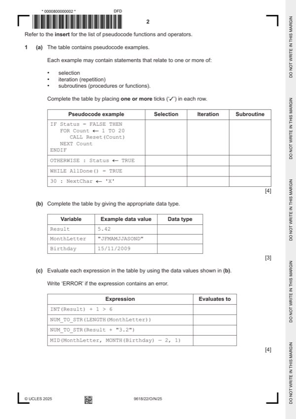

Question 1

Original paper page 2
Part 1(a) — solution
Answer: 4
- IF Status = FALSE THEN
- WHILE AllDone() = TRUE
Mark points
- IF Status = FALSE THEN
- WHILE AllDone() = TRUE
Part 1(b) — solution
Answer: 3
3
Variable Example data value Data type
Result 5.42 REAL
MonthLetter "JFMAMJJASOND" STRING
Birthday 15/11/2009 DATE
One mark per row
Mark points
- Correct result: 3
Part 1(c) — solution
Answer: 4
4
Expression Evaluates to
INT(Result) + 1 > 6 FALSE
NUM_TO_STR(LENGTH(MonthLetter)) "12"
NUM_TO_STR(Result + "3.2") ERROR
MID(MonthLetter, MONTH(Birthday) — 2, 1) "S"
One mark per row
University Press & Assessment 2025 Page 5 of 15
9618/22 Cambridge International AS & A Level – Mark Scheme October/November
PUBLISHED 2025
Mark points
- Correct result: 4